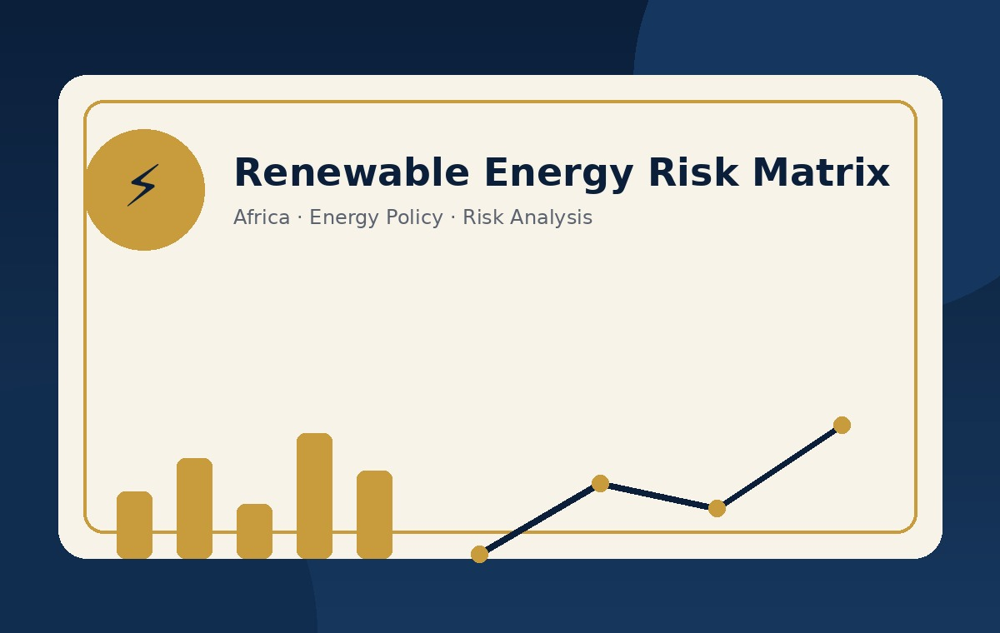

Energy Policy | Risk Analysis | Africa
Renewable Energy Risk Matrix in Africa
Interactive dashboard assessing renewable energy investment risk across African countries using governance, infrastructure, energy access, fossil fuel subsidies, logistics and vulnerability indicators.
Python · Streamlit · Risk scoring
Open Dashboard →